[COMIC] เทศกาลซากุระบาน
เขียนจากเทศกาลนั่นเลย ซึ่งเลยมานานมากแล้วเสียด้วย เนื่องจากเขียน ๆ หยุด ๆ
ในที่สุดก็เสร็จซะที ฮ่า ได้โพสหมวดนี้ซะที
ถ้าอ่านไม่รู้เรื่องไปบ้าง ขออภัย
-ขอบคุณครับ-
ในที่สุดก็เสร็จซะที ฮ่า ได้โพสหมวดนี้ซะที
ถ้าอ่านไม่รู้เรื่องไปบ้าง ขออภัย
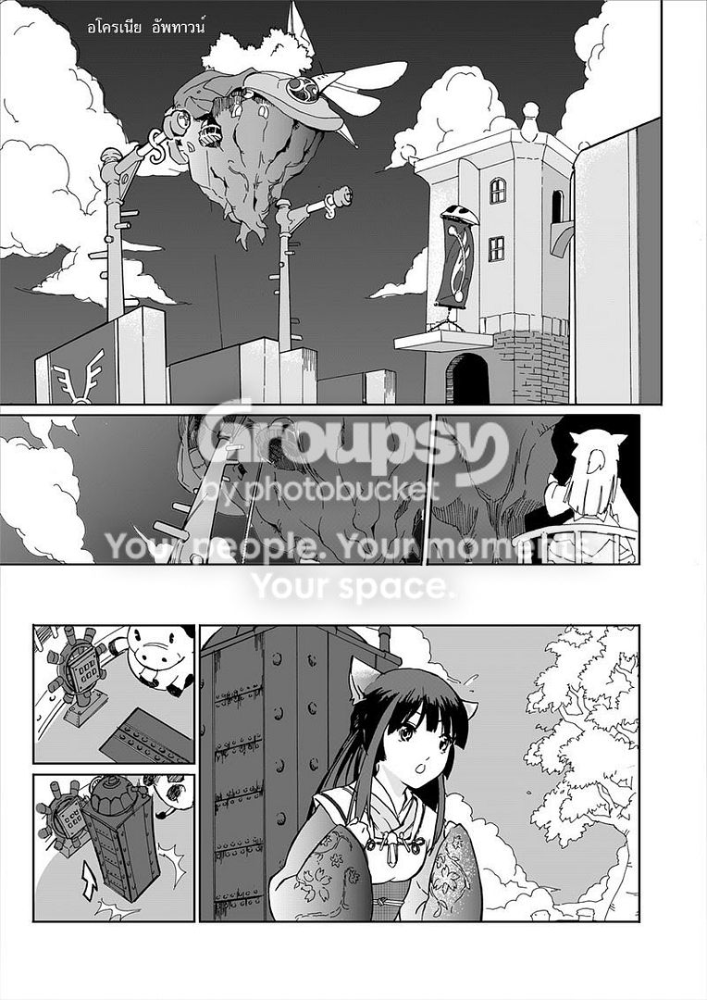
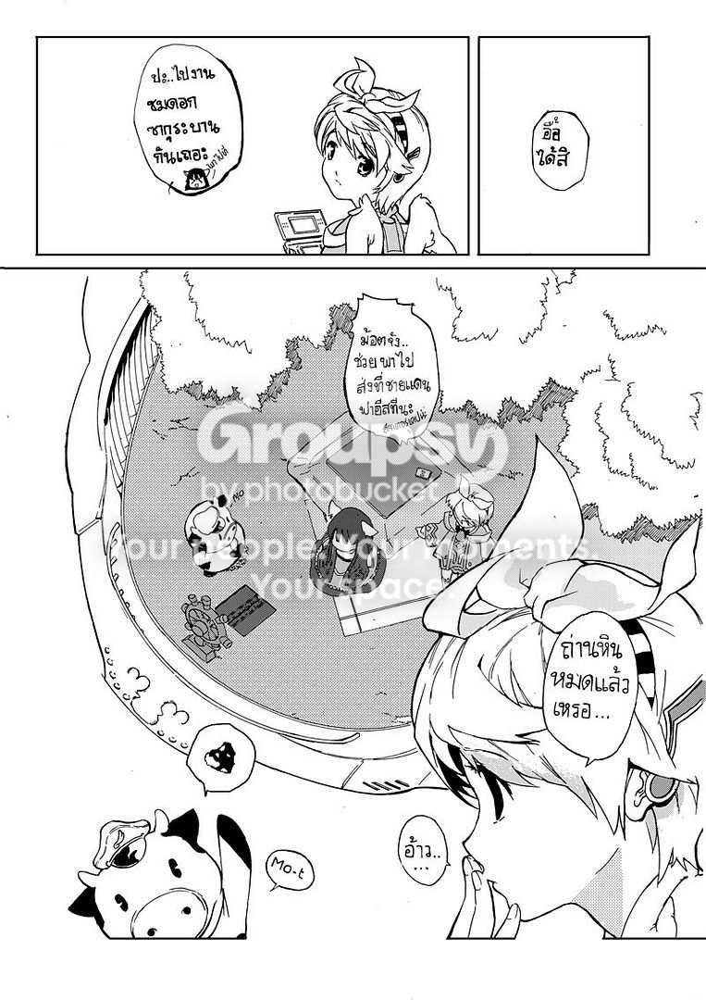
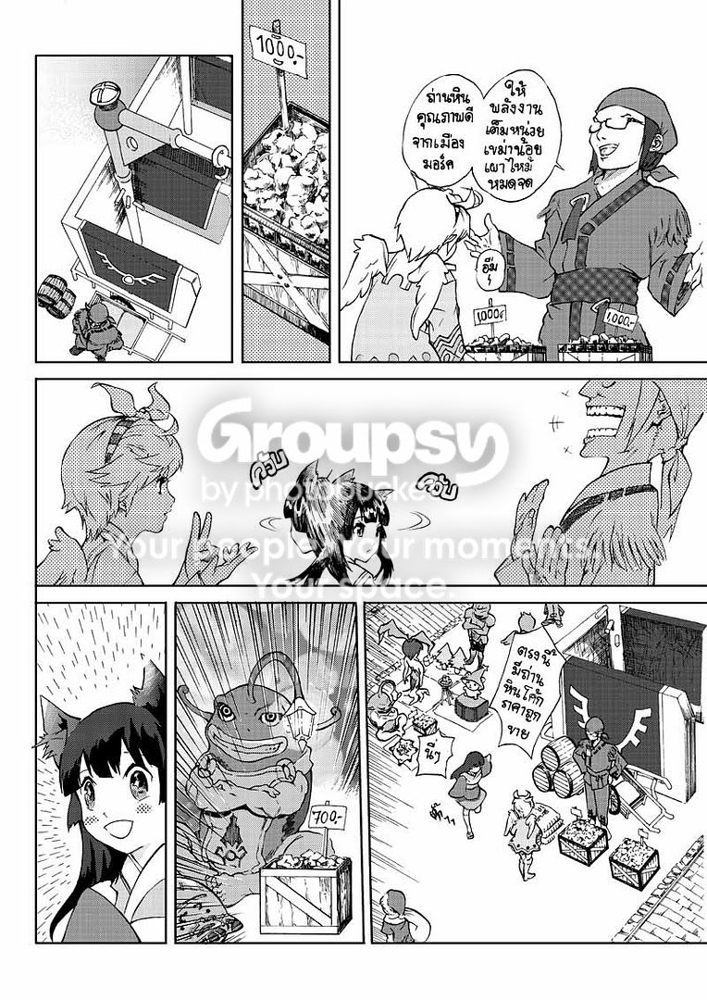
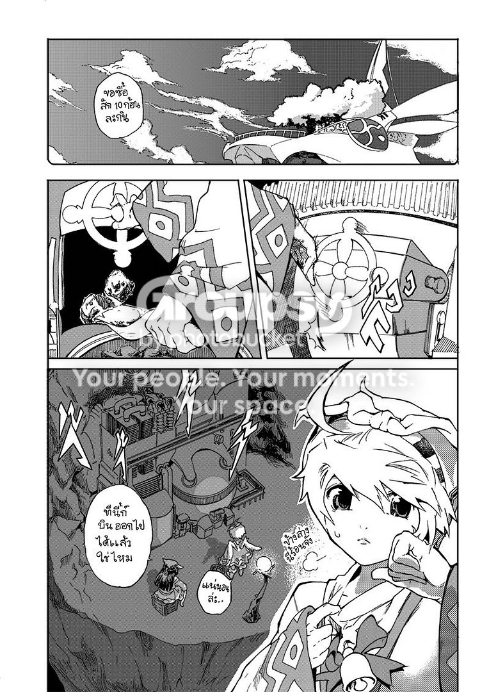
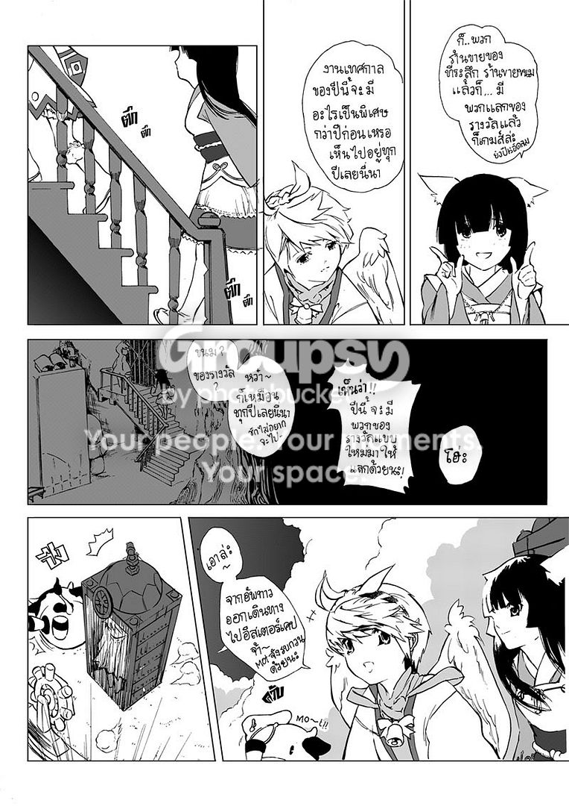
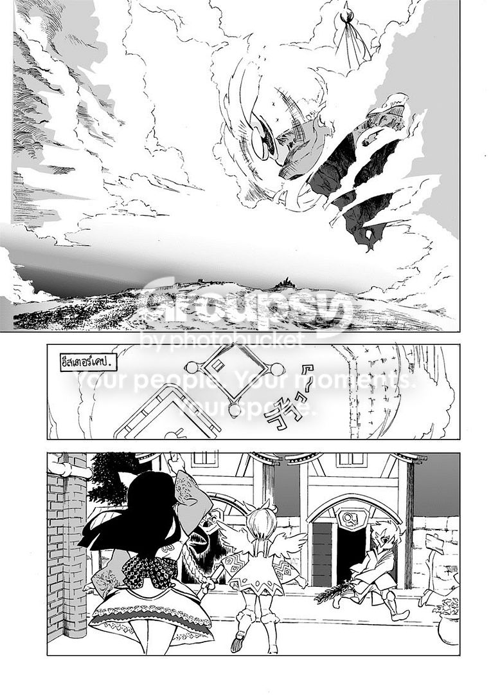
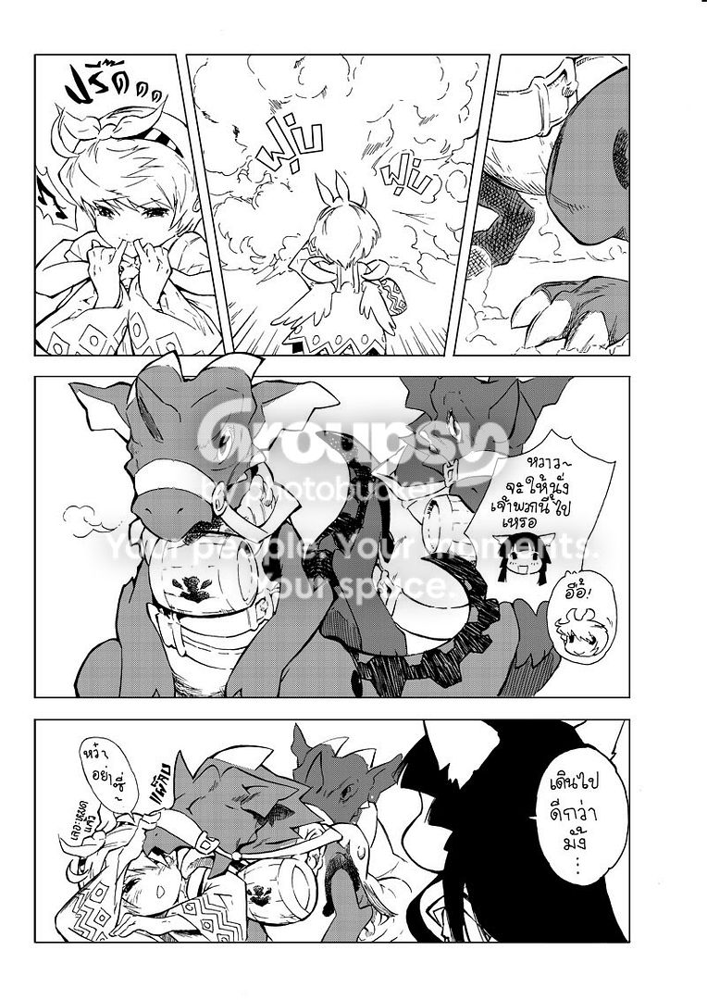
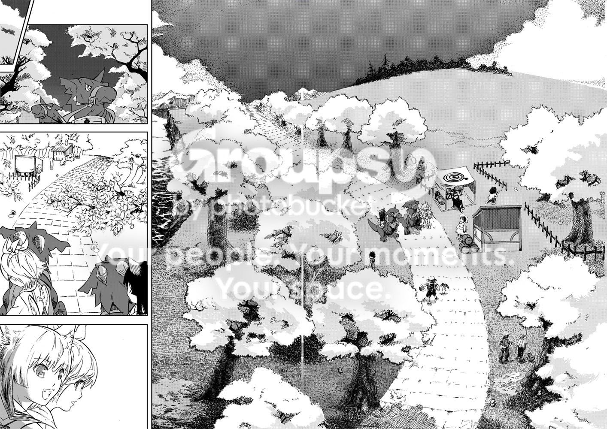
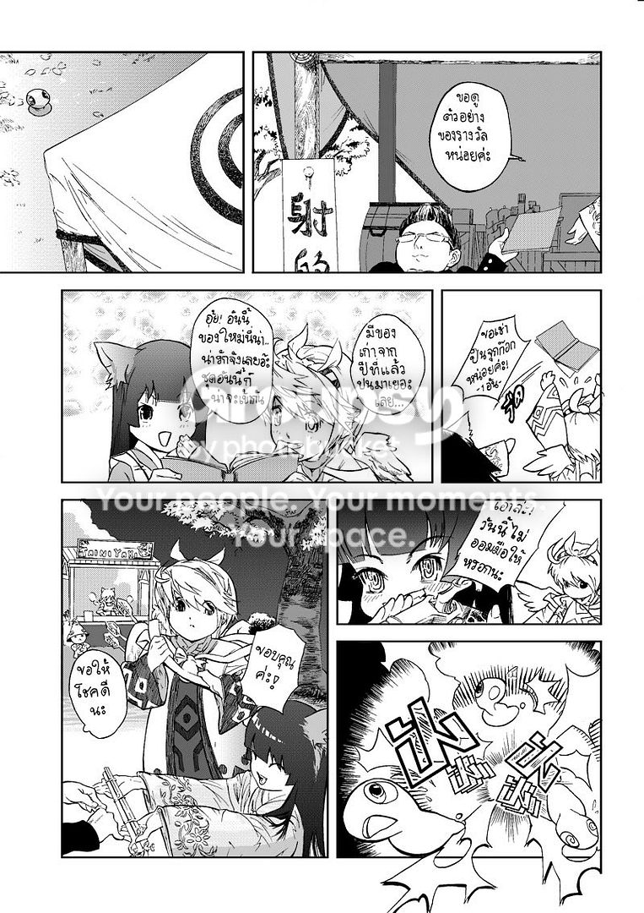
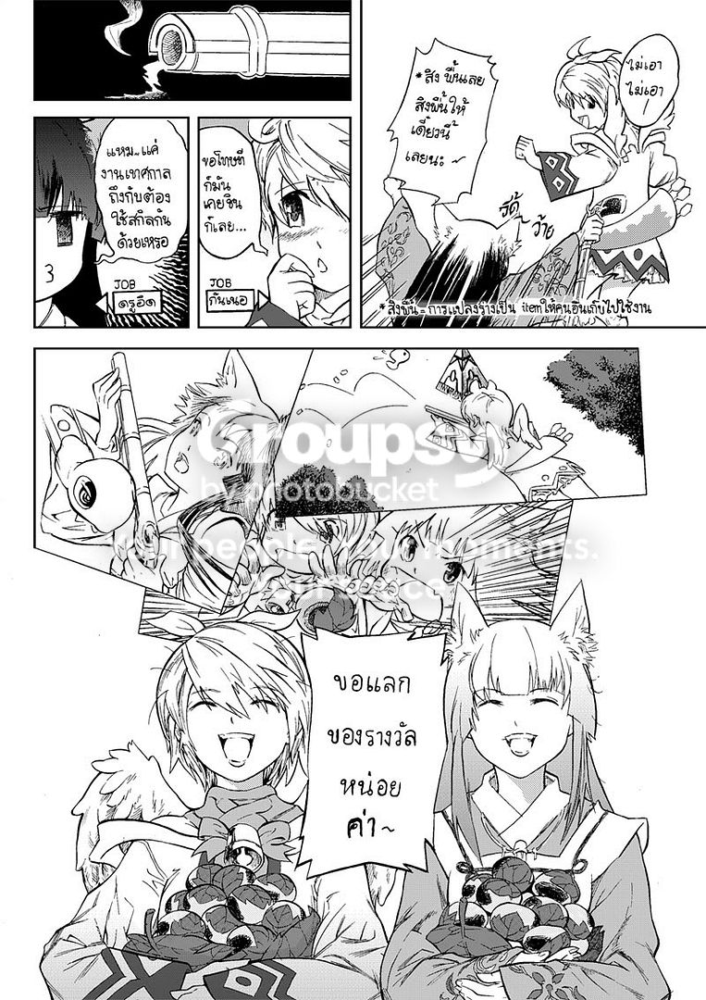
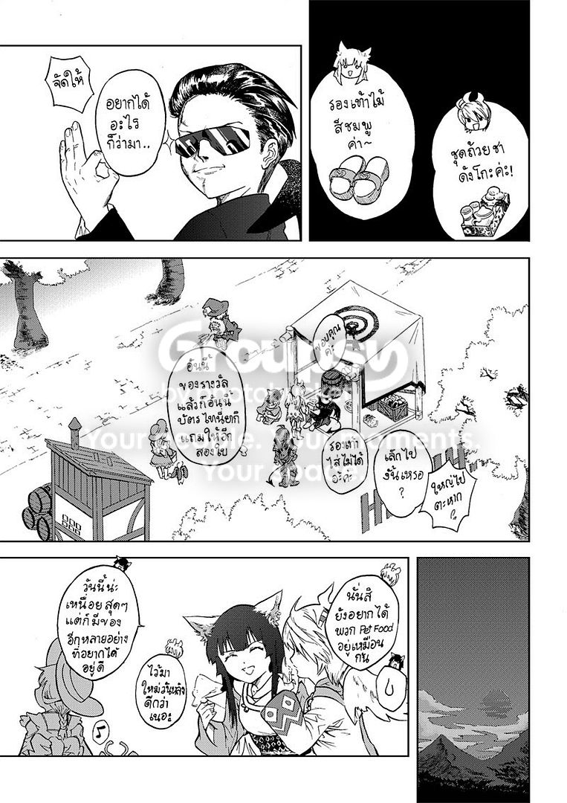
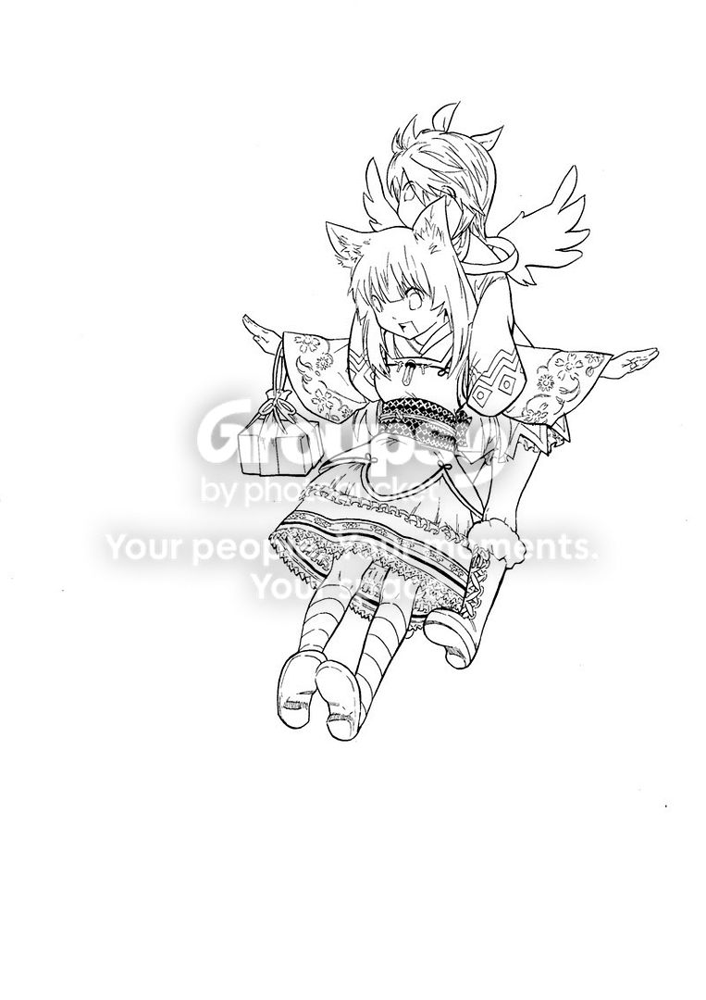
-ขอบคุณครับ-